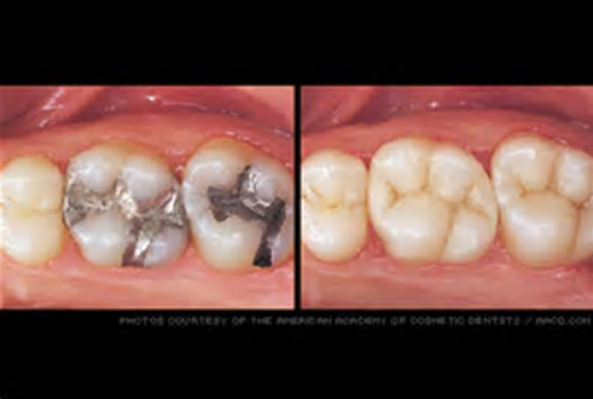

Our goal with restorative dentistry is to make your teeth as cosmetically beautiful and aesthetically natural as possible. Because of decay and breakage, a person’s smile may not be look as good as it once was. We can bring it back.
When a tooth has been damaged due to dental decay or breakage, it must be either filled, or restored with an onlay or crown. Our goal is to preserve as much of your natural tooth as possible. We prefer to use materials that allow us to most closely match the tooth color. Matching tooth color is very important, so we have an exceptionally large array of color tones to get the perfect smile. In a highly demanding situation such as the front teeth the tooth can be layered to give the most realistic invisible presentation. Depending on the situation, we may be able to conserve the tooth by creating an onlay, a procedure only 12% of the dentists in the nation perform. For both onlays and crowns, we use CAD/CAM dentistry, digital imaging from which we mill the onlays and crowns right here in the office. The fact that we have this equipment in our office significantly reduces the number of visits you have to make in order to get the job done and looking good.

CAD/CAM dentistry provides a three dimensional digital image of your mouth, which allows us to sculpt and shape a crown or onlay with state-of-the-art software, and then mill it on-site with our CEREC milling machine. A procedure that took up to 6 weeks to complete in the past can now be performed in one visit while you wait.
Not only is it faster, but the end result is a more comfortable fitting restoration with custom color matching that looks completely natural. At Maine Integrative Dentistry, we have been making restorations this way since 2002 when we invested in the technology and became one of the first dental practices in Maine to be able to offer this level of service.
If you’d like to schedule an appointment, give us a call at 207-775-0001 or email us at patientcare@drkerr.com. We are located in Portland, Maine.